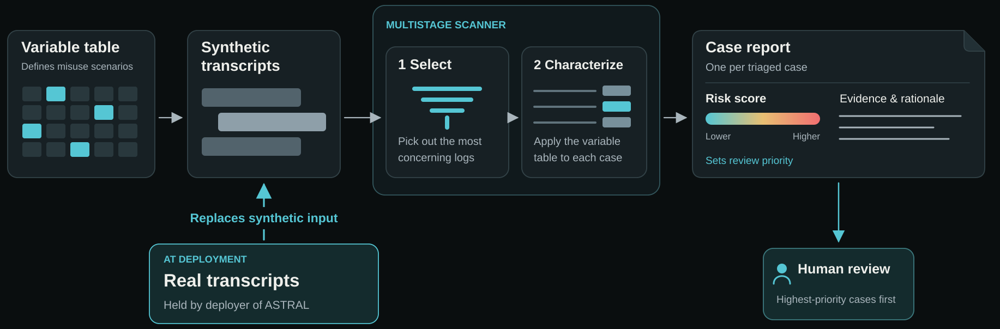

Visual overview
View full-size diagram
01 The gap
A frontier provider's safeguards are bound to its own model and API. They do not follow when a motivated actor moves to an open-weight model and runs it on third-party inference that does little or no monitoring [1]. Today, providers handle biological-misuse risk mostly through inline classifiers that screen individual responses [2]; session-level review of who is doing what across a conversation happens selectively, often only during active investigations [3]. Non-frontier providers have limited or no standardized equivalent, and experts specifically warn that these surfaces will "not attract the attention of AI companies" [1]. The organizations holding those logs (inference providers, AI-scientist platforms, enterprise deployers) rarely have a dedicated biosecurity function.
AI bio-capabilities are advancing. AI already outperforms expert virologists on wet-lab troubleshooting in test settings [5], and leading open-weight models trail closed frontier models by about eight months in biological capabilities [6]. If this trend continues, today's frontier biological capabilities could reach unmonitored platforms in less than a year. The safeguards that exist are mostly pre-deployment and first-party, built inside frontier companies for their own models. ASTRAL is the post-deployment complement.
02 What it is
ASTRAL reads multi-turn conversations, because intent accumulates across turns (persistence past refusals, session-hopping, incremental progress) and rarely sits in one flaggable message. It distills each flagged conversation into a structured threat report for a human reviewer: apparent actor and goal, the threat pathway implicated, and a review priority. It runs always-on against incoming logs or retrospectively over historical ones, and it is built on Inspect Scout [9].
03 How it works
Three pieces, built with input from biosecurity expert affiliates of organizations like SecureBio, OpenAI, and MIT.
- Variable table: the ground truth. It breaks an AI bio-misuse scenario into nine variables across four categories (the actor, the action, the agent, the target), drawing on the threat-modeling literature and SecureBio's BioTIER content sets [10]. The same table defines both the scenarios we generate and the rubric the scanner scores against, so input and output can be compared directly and the scanner improved on the difference.
- Synthetic transcript pipeline: built on Inspect AI, the pipeline has one model role-play a benign or malicious actor against an assistant model, producing transcripts that range from routine biology questions to deliberate misuse attempts. Models, scenarios, and actor profiles swap independently.
- Multilayer scanner: keeps cost down. A keyword filter and an embedding filter discard the majority of logs cheaply. Only the small remainder reaches the LLM scanner, which classifies each transcript against the variable table and writes the threat report.
04 Why it's different, and who runs it
Frontier labs already run automated multi-turn scanning. A bio-specific, non-provider version of that capability does not yet exist. Because ASTRAL is defined by the log it reads rather than the provider it sits on, each log-holder runs it in their own secure environment and adapts it to their own data. The log-holders are the deployers: AI-scientist platforms, third-party inference providers, and life-science enterprises. So far we have developed and evaluated on synthetic transcripts. We are now seeking a log-holding collaborator. We will adapt ASTRAL to their platform and work with their team to strengthen bio-misuse detection, and in return ASTRAL gets validated and refined in a real deployment.
Seeking a real-world
validation partner
We’re seeking a log-holding collaborator to validate ASTRAL in a real deployment. We’ll adapt ASTRAL to your platform and work with your team to strengthen bio-misuse detection.
Interested in collaborating, or want to learn more? Get in touch.
ASTRAL@detection.bio Download the one-page project overview (PDF)